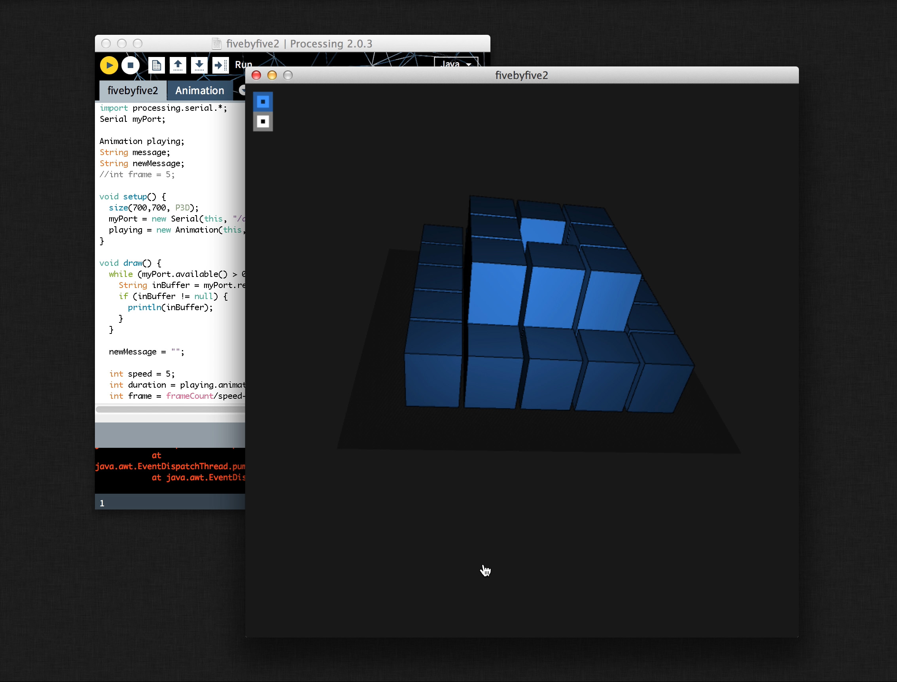

I began learning how to work with custom circuit boards both on the programming and fabrication side. The first project itself focused on creating a programmer chip from a single-layer copper board, soldering some surface-mount components, and then finally programming it to run smoothly.


From there I dove into learning how to use Eagle, one of the more widely used circuit board design tools and used it to create a "simple" board that measures capacitance on a pole.


The next project progressed to controlling a few led's using two buttons. It was a lot easier with the full-sized already-built arduino but things get trickier once you go custom from the ground up


The last iteration to date gets rid of the buttons and opens up the leds to being controlled over a cable by another chip or another computer. This creates the groundwork for my Instinct project's add-on where the taillight acts as a turn signal.

The video below shows the simplified communication level by sending just a number and I cycle through "left turn", "right turn", and "braking". Future revisions will have more led's, better animations, and possibly wireless.
Basic Networking Boards
Two-node serial communicated board set

Finally, I wrote a nicer more graphical interface for testing and playing with the board.


Optielastic: Designing & converting simple GIF's to drive a 3d shape display
Trying to design test patterns and interactions for the elastic shape display was tedious and difficult, so while my teammates were working on the lower-level hardware for the air pumps, I designed the Processing & Arduino scripts above.

- 
These scripts take a 5x10 pixel animated GIF as an input, using each frame as literal frames, the top half for color information, and the bottom half as a depth map. This is then both visualized on screen in 3d for debugging and sent to the hardware as an array. Take a look at the Processing script on Github.